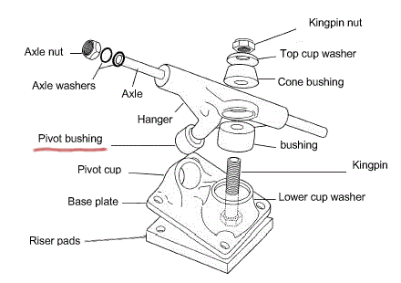
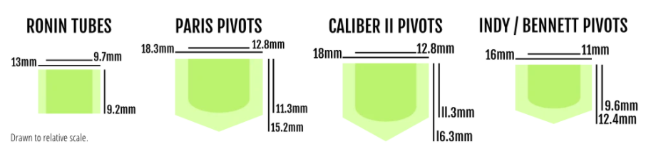

В скейтовых и лонгбордных подвесках есть шарнир, который отвечает за поворот подвески. Несквозное отверстие этого шарнира (чашечка, стакан) по-английски называется Pivot Cup. В нем размещается палец подвески, на котором должен быть обязательно надет пластмассовый колпачек. Этот колпачек называется Pivot Bushing.

Почему нужен пивот бушинг, и что будет если он протрется, растрескается или рассыплется? Если пивот бушинг испортится, то металл пальца будет тереться о металл стакана, и очень быстро в этом месте будет вытираться и превращаться в металлическую пыль, деформация произойдет буквально за пару покатушек. И дальше, если даже надеть новый колпачек, то в этом месте колпачек будет быстро протираться. Лучше до такого состояния подвеску не доводить.
В общем, колпачки Pivot Bushing - это пластиковые или полиуретановые колпачки, которые размещаются в шарнире, отвечающем за поворот подвески. А так как подвески бывают разные, то и размеры колпачков тоже бывают разные.
Вот какие размеры удалось найти на просторах интернета:

Таблица размеров Pivot Cup по брендам (моделям подвесок):
|
Тип поворотного механизма |
Внутренний диаметр |
Внешний диаметр |
Высота |
Совместимые подвески (COMPATIBLE TRUCKS) |
|
RipTide Ronin Tubes |
9.7mm |
13mm |
9.2mm |
Ronin Trucks |
|
RipTide Paris |
12.8mm |
18.3mm |
15.2mm |
Paris Trucks (RKP, V1 и V2) |
|
RipTide Caliber II |
12.8mm |
18mm |
16.3mm |
Caliber II (RKP) |
|
RipTide Indy / Bennett |
11mm |
16mm |
12.4mm |
Independent, |
Однако олностью верить этой таблице нельзя. Например, на лонгборде Loaded Tan Tien используются подвеки Paris V2 (180mm / 50° Trucks). На сайте производителя данных подвесок можно найти такую информацию по колпачкам:
Видно, что по внутреннему диаметру несовпадение 1.5mm, а по высоте 2,9mm. Является ли такое несоответствие критичным - непонятно. Скорее всего, колпачек может быстро лопнуть, если натянуть его на палец, который расчитан на более широкий колпачек, если разница по диаметру 1,5 мм.
Но тут дело обстоит следующим образом. В российских скейт-магазинах колпачков Pivot Bushing традиционно не найти. А в интернете стоимость фирменных колпачков - 13-15$ за две штучки, плюс стоимость пересылки. Платить больше тысячи рублей за две малюсенькие пласмасски - это, по-моему, перебор.
Выход тут только такой: либо AliExpress, либо Avito. На